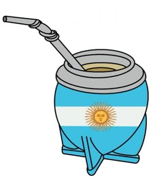

¿Qué es el mate?
El mate es una bebida tradicional de Argentina que se comparte entre amigos y familia.
Importancia cultural
El mate es una costumbre social muy importante en Argentina y forma parte de la vida diaria.
Imágenes

